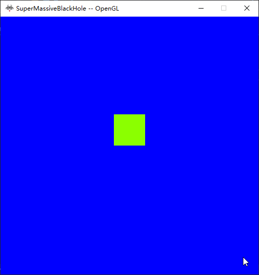
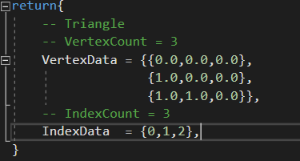
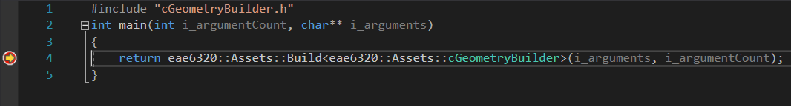

Here is A picture of human readable files, there are three advantages to have human readable files
Firstly, it would be more matianable By having these files, people do not need to run the code
to have some ideas of the game.
Secondly, the could would be more encapsulated. People could change the content of the game by modifying these files and
not Worrying The implementations
Thirdly, these files would make debug easier. having all data organized togather,making finding them during debug easier.
There are three requirments of humanreable files, it should be easy to understand, easy to read, and easy to edit.
The following is a human readable files for defines triangle geoemtry. Adding vertexcount and indexcount makes the file more
easy to read for people, but more expensive to maintain. Cause lua could get the size of tables automatically.
and currenly we are hand writing these files, having two extra values means more to take care of when modifying the file.
Using comment is good way to solve this problem for now. It would make more sence to inlcude counts as parameters when we are
generating those files by programs

Debugging Build Tool Image
